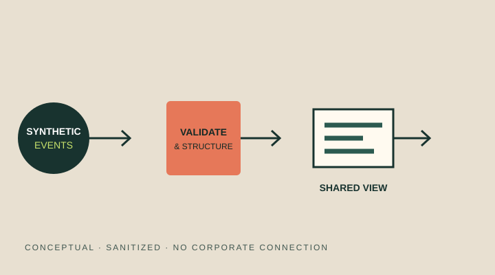
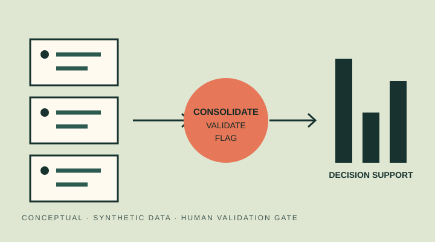

Mar 2026–Present
Commercial Operations / Used Trucks
Volvo Trucks
Analytics and automation solutions for commercial and operational routines, supporting KPI visibility, process standardization and coordination across stakeholders.
Business-first transformation
Commercial Strategy & Business Transformation | Data Analytics, Automation & Continuous Improvement
I use data, automation and continuous improvement to help commercial and operational teams make work more visible, consistent and actionable.
02 / About
My experience has developed in environments where commercial, technical and operational work must stay aligned. Across sales support, strategic marketing and sales engineering, and commercial operations, I have worked with indicators, CRM and lead analysis, operational controls, Lean initiatives and digital tools.
My background in Organizational Communication shapes how I approach transformation: a solution creates value when people understand it, trust it and can use it in their routine. I combine stakeholder coordination and clear communication with analytics and automation.
03 / Experience
Mar 2026–Present
Volvo Trucks
Analytics and automation solutions for commercial and operational routines, supporting KPI visibility, process standardization and coordination across stakeholders.
Jun 2024–Mar 2026
Volvo Trucks
Power BI dashboards, CRM and lead analysis, NPS, VBA and Python automation, budget and cost monitoring, Lean initiatives and cross-functional project coordination.
Jul 2024–Dec 2025
Cacto Comunicação · UTFPR Junior Enterprise
Client relationships, commercial proposals, digital campaigns, supplier interfaces and project routines.
May 2023–Jun 2024
Volvo Trucks
Support for dealerships throughout Brazil and assistance with Latin American export routines, connecting documentation, transport partners and dealer communication.
04 / Projects
Public, conceptual demonstrations of transferable business methods. All records are synthetic and no employer systems or confidential implementation details are included.

01 · Case study
A sanitized concept for making vehicle movement status, event history and transfer context easier to follow across stakeholders.
Read the case study
02 · Case study
A conceptual pipeline for consolidating improvement initiatives, validating required information and creating a trusted analytical layer.
Read the case study05 / Impact
Eliminated a physical archive and reduced document-handling effort, paper consumption and associated water use.
Improved consistency and reliability of technical information through a unified reference.
Improved information clarity for bodybuilders and reached the final stage of a customer-category Kaizen award.
Public copy intentionally omits unconfirmed quantified outcomes and confidential implementation details.
06 / Recognition
07 / Skills
Commercial strategy · Business transformation · Project coordination · Stakeholder management · Process mapping
Power BI · Power Query · Excel · Data analysis · KPI development · CRM & lead analysis
Python · Power Apps · Power Automate · VBA
Lean Thinking · Kaizen · PDCA · Process standardization · Operational excellence
08 / Resume
The current resume files contain personal contact information and document metadata, so they are intentionally not published. Public-safe English and Portuguese versions can be added after those details are reviewed and removed from copies.
Not publicly available
09 / Contact
For professional contact, connect with me through LinkedIn or explore my public work on GitHub.